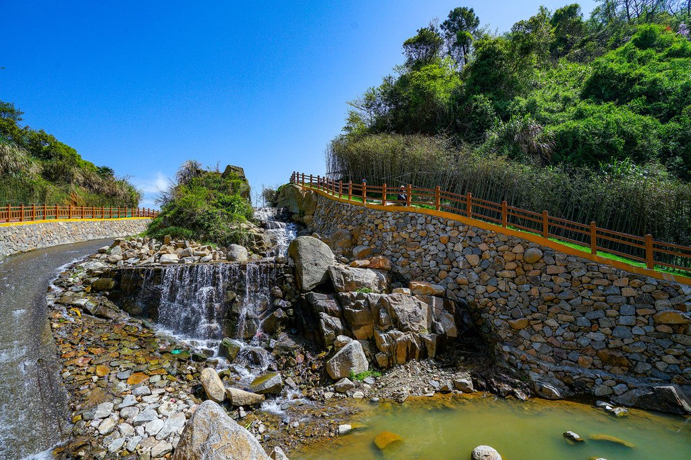

泾县月亮湾景区位于距泾县县城18公里处被誉为“华夏毛竹第一镇” 的蔡村镇月亮湾村境内，景区内山清水秀、秀峰峻岭、层次分明，连绵百里，驱车而至，扑面而来的阵阵清风、夹杂着春竹的馨香，映入眼帘的是层峦叠嶂的山峰，还有漫山遍野的翠竹，河中成群的鱼虾尽情的嬉戏，远处深山中，不时地传来伐竹工人阵阵伐竹声和船工号子声。这里被多家电影制片厂选为外景基地：《月亮湾的笑声》、《月亮湾的风波》、《红色的记忆》、《渡江侦察记》等等多部优秀经典的影视作品都曾在此拍摄外景。

月亮湾景区风景美的令人神清气爽，心旷神怡，潺潺山泉夹杂着江南的娟秀和雅致，澄清可掬。乘竹筏而下，山村竹海倒映水中清晰可见。天上白云在水中漂浮不定如若轻烟拂涟漪。远处竹海，绿浪翻滚、浩瀚广阔。渡过鸳鸯潭，只见两岸谷道蜿蜒，山鸟轻掠水面，一声呼啸，回音荡漾，野鸟群飞，引前行中，只见小洼处，水似绿茶泡汤，大潭中水像玉石发光，水流若雪花奔窜、珍珠飞溅，舒缓段犹如处子依偎。侧耳倾听，涧中水声忽管忽弦，有时鼾声如雷，有时悠长幽静，一切都是有条不紊，耐人寻味。

当您厌倦了城市的喧嚣和节奏，想走出被钢筋混凝土包围的都市生活；想舒缓疲劳了很久的身心；到月亮湾里来！这里是一个集空气、生命、绿色于一体的世外桃源；来吧！放飞心灵的翅膀，放纵身心于广阔的云栖山野，用所有的感观去采撷自然的气息，呼吸绿味、享用绿意，享受这里诗意般的田园生活！

“小小竹排江中游, 巍巍青山两岸走”。月亮湾，美的自然！她有着自然的景观、自然的山水、自然的锦绣、纯净的意境。如今的都市人在飞快的生活节奏下，竭力的想摆脱都市的喧嚣、工作的烦恼；寻找能洗涤心灵的宁静去处，走进这真山真水的纯绿色世外桃源，放空自己、感受自然，不失为充盈心灵的胜举。